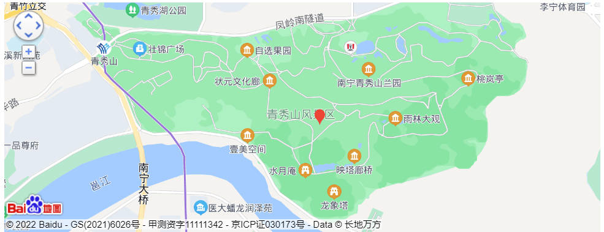

国家5A级旅游景区、自治区级风景名胜区、广西十佳景区和南宁市十佳旅游景区
青秀山群峰起伏、林木青翠、岩幽壁峭、泉清石奇，以南亚热带植物景观为特色，常年云雾环绕，具有高浓度的负氧离子，形成一个独特的天然休闲氧吧，素有“城市绿肺”、“绿城翡翠，壮乡凤凰”的美誉，是南宁市最靓丽的城市名片之一。
历史沿革
1986年，南宁市人民政府拨款开始重建南宁青秀山风景名胜旅游区。
1987年10月，南宁青秀山风景名胜旅游区正式开放。
2012年11月30日，南宁青秀山风景名胜旅游区西区停车场开工建设；同年12月22日，景区主干道开始维修。
2013年3月18日，景区主干道完成维修；同年7月1日，西区停车场竣工。
2013年3月18日，景区主干道完成维修；同年7月1日，西区停车场竣工。
2014年2月17日，南宁青秀山风景名胜旅游区东区停车场开工建设。
2015年4月1日，南宁青秀山风景名胜旅游区西侧门开工建设；同年2015年5月15日，西侧门竣工。
地理位置
位置境域
南宁青秀山风景名胜旅游区位于广西壮族自治区南宁市青秀区凤岭南路6号，坐落于邕江畔，西起青山路、北至东盟商务区，南面和东面靠临邕江，面积为13.54平方千米。
地形地貌
南宁青秀山风景名胜旅游区四周呈丘陵群山环绕，地势北高南低，有大小山岭200多座，区域内海拔为63.9～288.3米，最高处是凤凰岭。
气候特点
南宁青秀山风景名胜旅游区所属的广西壮族自治区南宁市青秀区地处北回归线以南，受海洋气候调节，属亚热带季风气候，阳光充足，雨量充沛，少霜无雪，年平均气温21.7℃。
自然资源
截至2015年，南宁青秀山风景名胜旅游区植物种类共6128种，隶属235科1283属，其中蕨类植物30科79属202种；裸子植物11科22属68种；被子植物194科1182属5858种；有国家级珍稀濒危重点保护植物232种，其中一级重点保护植物92种，二级重点保护植物140种。